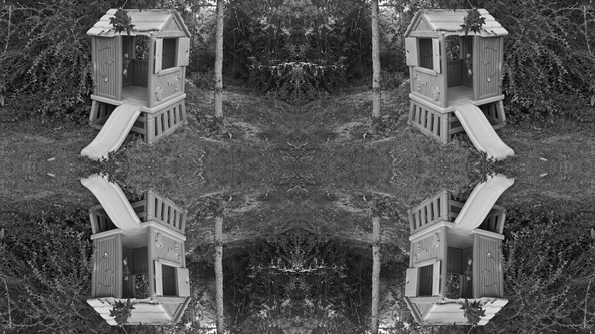

On the periodic-plus-smooth decomposition of an image, part 1: introduction
In this new series, we will explore the so-called periodic-plus-smooth decomposition of an image, introduced by Moisan in 2011. This series is largely based on Moisan’s paper, called Periodic plus Smooth Image Decomposition (the author’s version can be found on HAL). Besides introducing a quite smart technique (that I do use for real materials science applications), this series will be an opportunity to discuss an important topic: how to test the implementation of an algorithm, and be confident that the test actually validates the implementation.
To do so, we will first define the periodic-plus-smooth decomposition as a minimization problem. This will lead to a first implementation of this decomposition: the objective function is quadratic, and the minimization problem therefore merely reduces to a linear system. However, this system is large (the number of unknowns is the number of pixels!). We will therefore use matrix-free techniques.
This first –quite inefficient– implementation will then serve as a reference implementation of the decomposition, for testing purposes. Indeed, Moisan showed that the minimization problem he introduced could in fact be explicitely solved in Fourier space. He proposed two efficient algorithms to compute the decomposition. Both rely, of course, on the FFT. We will implement one of these and test it against the reference implementation.
This is a series in seven parts, organized as follows:
- Introduction
- Defining the decomposition
- The energy as a quadratic form
- Implementing the linear operators
- Minimizing the energy, the clumsy way
- Minimizing the energy, the clever way
- Improved implementation of Moisan’s algorithm
The code discussed in this series is available as a Python module on GitHub.
That’s a lot of work! So, without further ado, let’s start introducing this decomposition!
The need for periodic images
Let us start by briefly discussing what is a periodic image, and why we would ever need one. Loosely speaking, an image is periodic if placing copies of the same image on a 2×2 grid can be done (almost) seamlessly. Remember that an image is defined for a discrete set of pixels, and that the pixel values themselves are also discrete. Therefore, it is not possible to refer to the continuity of an image, which explains why it is difficult to define periodic images more precisely.
It is actually easier to verify that an image is not periodic. Let us consider the following image as an example (see Figure 1).

Figure 1: The original image.
Instead of putting aside 4 copies of the same image, we can simply swap the quadrants, as shown in Figure 2. Alternatively, you could also ask my three-year old daughter if her hut is periodic ;-). In Figure 2, the four corners certainly do not join seamlessly at the center, which is a sure indication that the image is not periodic.

Figure 2: The original image shown in Figure 1, with swapped quadrants.
It should be noted that the image shown in Figure 2 is readily produced with the numpy.fft.fftshift function, as illustrated by the following code snippet1
import numpy as np from skimage.io import imread, imsave u = imread(DATA_DIR+'hut-648x364.png') imsave(DATA_DIR+'hut-648x364-fftshift.png', np.fft.fftshift(u))
Why would this lack of periodicity be a problem? Well, many image analysis techniques rely on the fast Fourier transform (FFT) for efficiency. In turn, the discrete Fourier transform implicitely assumes that the data is periodic; otherwise, artifacts can result. An archetypal example is the power spectrum of an image (we shall come back to this specific issue in a dedicated series). The power spectrum of Figure 1 is displayed in Figure 3 below; the following code snippet was executed to produce this image.
u_dft = np.fft.fft2(u) u_ps = np.abs(np.fft.fftshift(u_dft))**2 a = np.log10(u_ps) a_min, a_max = np.min(a), np.max(a) a = 255*(a-a_min)/(a_max-a_min) imsave(DATA_DIR+'hut-648x364-power_spectrum.png', a.astype(np.uint8))

Figure 3: The power spectrum of the image shown in Figure 1.
In Figure 3, the bright cross at the center is the signature of the jumps across the boundaries of the image. Indeed, remember that discontinuities at large correlation lengths translate to oscillations at low frequencies (the center of the power spectrum image).
Periodization by symmetrization
Of course, it is possible to enforce periodicity by tiling together 4 mirror images of the same initial image as follows (see figure 4)
m, n = u.shape left, right = slice(0, m), slice(2*m-1, m-1, -1) top, bottom = slice(0, n), slice(2*n-1, n-1, -1) u_mirrored = np.zeros((2*m, 2*n), dtype=u.dtype) u_mirrored[left, bottom] = u u_mirrored[right, bottom] = u u_mirrored[left, top] = u u_mirrored[right, top] = u imsave(DATA_DIR+'hut-648x364-mirrored.png', u_mirrored)

Figure 4: Periodization by symmetrization of the image shown in Figure 1.
The resulting power spectrum (computed with the code snippet below) is shown in figure 5. It is observed that symmetrization does not remove entirely the cross at the center of the power spectrum. Worse, “it makes the DFT symmetric and real-valued, which can be dramatic if the phase component of the Fourier transform has to be analyzed, or if orientation issues are concerned” (Moisan, 2011). This led Moisan to introduce the periodic-plus-smooth decomposition.
a = np.abs(np.fft.fftshift(np.fft.fft2(u_mirrored)))**2 a[a==0.0]=1.0 a = np.log10(a) a_min, a_max = np.min(a), np.max(a) a = 255*(a-a_min)/(a_max-a_min) imsave(DATA_DIR+'hut-648x364-mirrored-power_spectrum.png', a.astype(np.uint8))

Figure 5: The power spectrum of the image shown in Figure 4.
Conclusion
In this post, we set the stage for the subsequent instalments of this series, arguing that it is sometimes desirable that an image should be periodic. In the next instalment of this series, we will define the periodic-plus-smooth decomposition of Moisan (2011). We will then turn to the implementation of this decomposition.